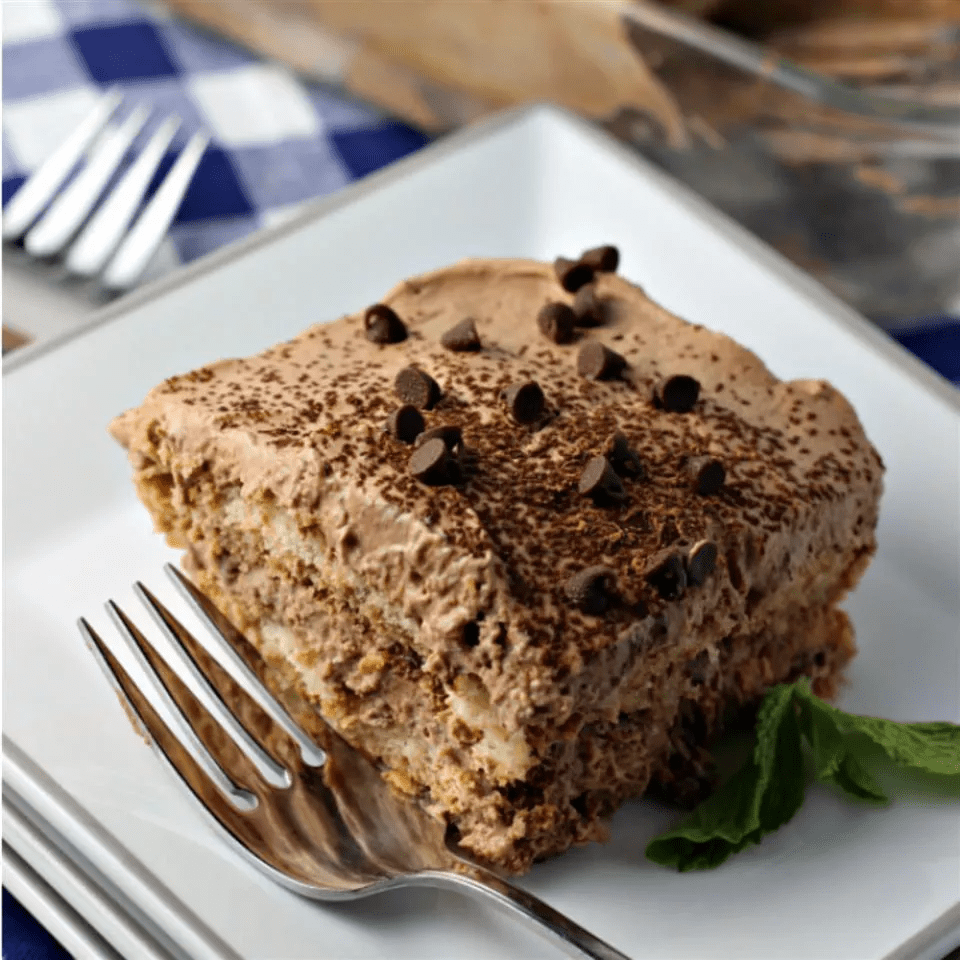

Authentic tiramisu

Tiramisu is a classic Italian layered dessert
with rum-flavored, coffee-soaked ladyfingers,
a creamy mascarpone custard, and whipped cream.
Tiramisu has Italian origins. The famous Italian
restaurateur Ado Campeol is credited with its invention
in the 1970s. In fact, he was widely known as
"the father of tiramisu." The word "tiramisu"
translates to "pick-me-up."
Ingredients
- 3 large eggs, separated, divided
- ½ cup white sugar
- 2 tablespoons brandy
- 2 cups brewed espresso, cooled, divided
- 2 (8 ounce) packages mascarpone cheese
- 1 pinch white sugar
- 30 ladyfingers (such as Savoiardi®)
- 3 tablespoons unsweetened cocoa powder
Steps
- Beat together egg yolks, 1/2 cup sugar, brandy,
and 1 tablespoon espresso in a bowl with an
electric mixer until smooth, 2 to 3 minutes.
Add mascarpone cheese; beat until well blended,
3 to 5 minutes.
- Beat egg whites and a pinch of sugar in a separate,
clean bowl with an electric mixer until stiff peaks form.
Gently fold egg whites into mascarpone mixture; set aside.
- Pour remaining espresso into a shallow dish.
Dip 1 side of each ladyfinger into espresso and arrange
on a serving platter in 2 horizontal rows of 6
and 2 1/2 ladyfingers in opposite directions on
both ends to form a rectangular shape.
- Spread 1/2 of the mascarpone mixture onto ladyfingers
and dust with 1/2 of the cocoa powder.
Top with remaining ladyfingers dipped in espresso,
mascarpone mixture, and cocoa powder.
- Refrigerate tiramisu until ladyfingers have softened, 2 to 3 hours.
Tips
Strong brewed coffee can be used in place of espresso.